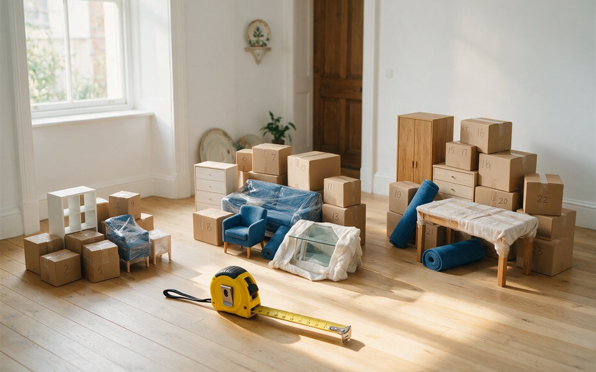

El volumen es la medida con la que se dimensiona una mudanza: de él dependen el tamaño del camión, el número de operarios y las horas de trabajo. Saber cuántos metros cúbicos tienes te ayuda a comparar presupuestos con criterio y a detectar ofertas que no cuadran.
Referencias por tipo de vivienda
Como orientación (los valores reales varían con el mobiliario y la cantidad de cosas):
- Estudio: entre 10 y 15 m³.
- Piso de 1-2 habitaciones: entre 20 y 30 m³.
- Piso de 3 o más habitaciones: entre 35 y 50 m³.
- Casa o chalet: más de 60 m³.

Método por inventario, en cuatro pasos
- Lista los muebles y electrodomésticos grandes y mide largo × ancho × alto en metros. Como referencia orientativa: un sofá de 3 plazas ronda 1,5-2 m³, una cama de matrimonio con canapé 1,5-2 m³, un frigorífico 0,5-0,8 m³ y una lavadora 0,4-0,5 m³.
- Cuenta las cajas. Una caja de mudanza estándar ocupa entre 0,06 y 0,1 m³. Un piso medio suele necesitar entre 40 y 80 cajas.
- Suma todo y obtén el volumen neto.
- Añade un margen del 15-20 % por los huecos que quedan al cargar, porque ningún bulto encaja al milímetro.
Errores frecuentes
- Olvidar el trastero, la terraza, el garaje o los objetos que viven encima de los armarios.
- Medir los muebles por dentro en lugar de por fuera.
- No tener en cuenta que desmontar camas y estanterías reduce bastante el volumen.
Con el volumen aproximado claro, puedes usar la calculadora de volumen y precio de mudanza: elige el tipo de vivienda más parecido al tuyo y verás un rango de precio al instante.